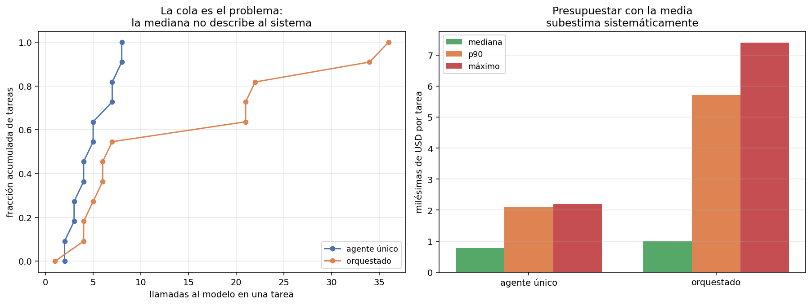

08 — Costo y latencia del bucle¶
El costo por tarea no es un número, es una distribución¶
04 construyó la economía de la inferencia sobre una unidad: el costo de una
llamada. Un agente rompe esa unidad, porque no hace una llamada sino N — y N
depende de la tarea, de lo que devuelvan las herramientas y de cuándo el modelo
decida que terminó. N es una variable aleatoria, y todo lo que sigue de eso es
el objeto de esta sección.
sistema media mediana p90 p95 máx máx/mediana
-------------------------------------------------------------------------------
agente único 0.997 0.770 2.100 2.164 2.195 2.8×
orquestado 2.422 1.000 5.713 6.581 7.405 7.4×
(costos en milésimas de USD por tarea, gpt-4o-mini)
En llamadas al modelo, que es lo que gobierna todo:
sistema media mediana p90 máx máx/mediana
---------------------------------------------------------------------
agente único 4.83 4.5 7.9 8 1.8×
orquestado 13.92 6.5 32.8 36 5.5×

Dos cosas que la media esconde:
La mediana no describe al sistema. En el sistema orquestado, la tarea mediana cuesta 6,5 llamadas y la peor cuesta 36: un factor 5,5× dentro del mismo sistema, con el mismo modelo y el mismo tipo de tarea. La curva acumulada del panel izquierdo lo muestra mejor que cualquier tabla: la mitad de las tareas se resuelven en menos de 7 llamadas y una cola larga se va a 36.
La media miente hacia abajo. En el orquestado la media (13,92) está por encima del p60 de la distribución: la arrastran unas pocas tareas caras. Un presupuesto construido con la media va a estar mal casi siempre, y el error crece con la cola.
Qué le hace la cola al plan mensual de 04 §6¶
04 §6 cerró con márgenes brutos sobre 99% y una advertencia: con quince pasos por
consulta, la holgura del plan caía de 7.975× a 12×. Ese cálculo usaba un supuesto
sobre el número de pasos. Ahora hay una distribución medida:
sistema si toda consulta si toda consulta razón
cuesta la mediana cuesta el p95
-----------------------------------------------------------------
agente único USD 0.77 USD 2.16 2.8×
orquestado USD 1.00 USD 6.58 6.6×
(1.000 consultas/mes)
El costo absoluto sigue siendo ruido: un dólar contra siete dólares al mes no
cambia ninguna decisión de negocio, y la conclusión de 04 §6 se sostiene entera a
esta escala. Lo que cambia es la predictibilidad:
A escala chica, la cola del costo agéntico es un problema de planificación, no de plata. A escala grande es un problema de plata — y el factor que la gobierna no es el precio del token sino cuántas tareas caen en la cola.
Y hay un corolario que el número absoluto esconde: si el plan se vende por consulta y el 5% de las consultas cuesta 6,6 veces la mediana, la rentabilidad por cliente depende de la mezcla de consultas de ese cliente. Un cliente que sólo hace preguntas estructurales de dos saltos no es el cliente promedio: es la cola entera.
Caching de prefijo: la optimización que el bucle regala¶
§2 midió que el 51,2% del gasto de entrada del módulo es prefijo idéntico reenviado. El caching de prefijo del proveedor ataca exactamente eso, y es por lejos la optimización de costo más rentable de un bucle agéntico. Con los números de este módulo y las reglas reales del proveedor:
iteraciones medidas 58
tokens de entrada totales 85,654
prefijo reenviado (iteraciones 2..N) 34,824
de ese prefijo, elegible para caché 25,000
iteraciones por debajo del umbral de 1.024 13
ahorro con 50% de descuento 12,500
ahorro sobre el gasto de entrada total: 14,6%
El descuento de entrada cacheada de gpt-4o-mini es del 50%, se aplica
automáticamente y sólo a partir de 1.024 tokens de contexto
(OpenAI,
docs).
De 51,2% de prefijo reenviado a 14,6% de ahorro efectivo hay tres descuentos, y conviene ver los tres:
- La primera iteración escribe el caché, no lo lee. En trayectorias de 4,8 pasos promedio, una de cada cinco iteraciones no ahorra nada.
- El descuento es del 50%, no del 100%. El prefijo se sigue pagando, a mitad de precio.
- 13 de 58 iteraciones no llegan al umbral de 1.024 tokens. Las trayectorias cortas —las baratas— son justamente las que no califican. El descuento llega donde más se gasta, que es donde tiene que llegar, pero conviene no presupuestarlo para el caso barato.
Tres formas de tirar el descuento a la basura¶
El caché exige que el prefijo sea idéntico byte a byte. Tres cosas lo rompen sin producir ningún síntoma visible:
- Una marca de tiempo o un id de sesión en el prompt de sistema. Parece inofensivo y anula el caché de todas las iteraciones.
- Reordenar las herramientas entre llamadas. El orden del menú es parte del
prefijo.
ToolRegistry.specs_openaiordena por nombre a propósito, y esa línea vale un 14,6%. - Poner el contexto recuperado antes de las instrucciones. El prefijo cacheable es el que no cambia; lo variable va al final, siempre.
Las tres tienen la misma propiedad incómoda: el sistema sigue funcionando perfectamente, sólo cuesta el doble. No hay test que falle. Es el tipo de regresión que sólo se detecta mirando la factura, y por eso conviene tener el porcentaje de prefijo cacheable como métrica observada y no como esperanza.
Cuándo cortar un bucle que no converge¶
El módulo acumuló tres casos de bucles que no convergían y ninguno era detectable desde afuera en el momento:
t-08en §1: ocho pasos enumerando tipos de relación sobre undoc_idinválido.t-08en §3: la respuesta completa en el paso 2, y cinco pasos más expandiéndola.t-08en §5: el orquestador delegando ocho paráfrasis de la misma pregunta, 48 llamadas.
La pregunta de diseño es qué regla habría cortado eso. Y tiene una restricción dura: la regla tiene que ser observable desde adentro del bucle, con lo que el harness ya tiene, sin conocer la respuesta correcta. Una regla que necesite el golden sirve para el análisis y no para producción.
Tres candidatas, evaluadas sobre las trayectorias reales:
--- agente único
regla disparó en pasos ahorrados respuestas correctas
(de 12) que habría cortado
------------------------------------------------------------------------------
repetición exacta 0 0 0
sin evidencia nueva 4 4 0
racha de errores 0 0 0
--- orquestado
repetición exacta 0 0 0
sin evidencia nueva 4 8 1
racha de errores 0 0 0
La regla que el AgentLoop traía —repetición exacta de la llamada— no dispara
nunca. Es la que §1 implementó y §5 ya había mostrado su límite: el agente varía
algún argumento y la regla no lo ve. En t-08 de §1 recorrió los seis tipos de
relación, todas llamadas distintas y todas inútiles.
"Sin evidencia nueva" es la regla correcta para el agente único: tres pasos seguidos sin que aparezca un identificador de documento nuevo. Dispara en 4 de 12 tareas, ahorra 4 pasos y no corta ninguna respuesta correcta. No le importa si la llamada cambió; le importa si trajo algo.
Y en el sistema orquestado esa misma regla rompe una respuesta buena. No es un detalle de calibración: es la misma ceguera de §5 vista desde otro ángulo. Lo que el orquestador recibe son resúmenes, y un resumen puede no traer identificadores nuevos mientras los trabajadores avanzan perfectamente. La observabilidad del progreso depende de la arquitectura, y una regla de corte calibrada en un agente único no se traslada a uno orquestado.
Regla de diseño: el criterio de corte se calibra por arquitectura, sobre trayectorias reales, y se evalúa con dos números — cuánto ahorra y cuántas respuestas buenas rompe. Publicar sólo el primero es cómo se justifican los cortes agresivos que degradan la calidad sin que nadie lo note.
Latencia: lo que este módulo no midió¶
La latencia de un bucle es, en primera aproximación, N veces la latencia de una
llamada, y 04 §1 ya explicó de qué depende cada llamada: el decode domina y el
contexto largo cuesta concurrencia. Sobre eso, el bucle agrega dos cosas:
- Es secuencial por construcción. Cada iteración necesita la observación de la
anterior. Un agente de 8 pasos no puede ser más rápido que 8 llamadas en serie,
por más capacidad que haya. Es la misma asimetría prefill/decode de
04 §1, una capa más arriba. - La cola de la latencia es la cola de N. Con máx/mediana de 5,5× en llamadas, el p95 de latencia es varias veces la mediana. Para una interfaz interactiva eso importa más que el costo.
No se midieron tiempos en este módulo, y decirlo es parte del trabajo: todas las
corridas salen de caché, así que cualquier número de latencia que reportara sería
del disco, no del proveedor. La aritmética de 04 §1 y la distribución de N de acá
son suficientes para el orden de magnitud; una medición real de latencia sería el
siguiente paso honesto.
Estado del arte (2026)¶
| Aspecto | Estado | Detalle |
|---|---|---|
| Caching de prefijo | 🟢 Maduro | Automático en los proveedores grandes; descuentos del 50% al 90% según modelo |
| Umbral mínimo de caché | 🟡 Poco conocido | 1.024 tokens en gpt-4o-mini; deja fuera las trayectorias cortas |
| Reportar costo agéntico como distribución | 🔴 Raro | Se publica el costo medio por tarea; el p95 casi nunca |
| Reglas de corte | 🟡 Artesanales | Tope de pasos y de gasto son estándar; los criterios de progreso, ad hoc |
| Evaluación de reglas de corte | 🔴 Casi ausente | Se publica el ahorro y no el daño |
| Costo del bucle en unit economics | 🟡 Emergente | 04 §6 lo anticipó; la varianza sigue tratándose como detalle |
Límites¶
- 12 tareas. Un p95 sobre 12 observaciones es, literalmente, la segunda peor. Los percentiles altos de acá indican forma, no valor. Es la limitación más seria de esta sección y no tiene arreglo sin más tareas.
- Un modelo, temperatura 0, caché congelado. La varianza que se mide es entre tareas, no entre corridas de la misma tarea. La segunda es probablemente importante y no está medida en ninguna parte del módulo.
- El ahorro de caché es un cálculo, no una medición. Se aplica el descuento publicado a los tokens de prefijo medidos. No se corrió el mismo experimento con y sin caché contra la API para comparar facturas.
- Sin medición de latencia. Ver arriba.
- Las reglas de corte se evalúan post hoc. Se calcula dónde habrían disparado sobre trayectorias ya producidas. Un bucle que corta de verdad cambia el comportamiento posterior del agente, y eso no está medido.
Lo que viene en la próxima sección¶
Ocho secciones de harness sobre un agente de corpus regulatorio. La última cambia de
objeto: el harness mejor calibrado que el autor usa todos los días no es el de este
módulo, es el de este repositorio — AGENTS.md, BACKLOG.md, los hooks, las
skills, los subagentes. §9 aplica el mismo marco a esa práctica: qué de eso es
harness y qué es decoración, y qué delegar y qué no.
Conexiones¶
04 §1(prefill/decode): el prefijo reenviado es prefill puro, que es justamente lo que se puede cachear. La aritmética de latencia por llamada sale de ahí.04 §6(unit economics): la advertencia sobre el factor de pasos por consulta se contrasta acá con una distribución medida en vez de un supuesto.03 §4(caching multinivel): el caching de prefijo es una capa que aquel capítulo no tenía, porque en request/response no hay prefijo repetido N veces.03 §10(CostMeter,BudgetGuard): el presupuesto por tarea, no por llamada, es la unidad correcta para un agente.- §1: la regla de corte por repetición exacta se implementó ahí y acá se muestra que no dispara nunca en las trayectorias reales.
- §2: el 51,2% de prefijo reenviado es el insumo del cálculo de caché.
- §5: la ceguera del orquestador reaparece como un falso positivo de la regla de corte. Es el mismo problema de información, no dos.
- §7: aquella sección reportó el costo como total; acá se mira su distribución.